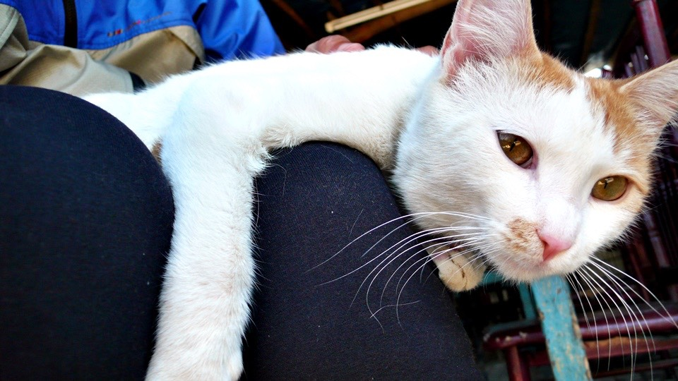
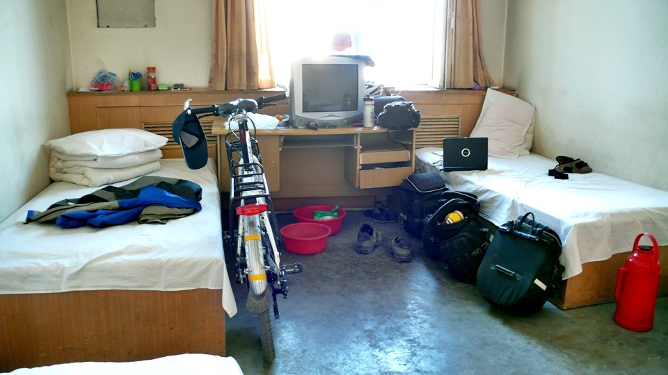

早餐店的競爭十分激烈，剛牽著小多走出旅館，就被積極的店員拉進去吃早餐。
除了拉客人很激烈之外，反映在競爭上的一點就是價錢，看起來很像自助餐的早餐店，那些小菜類的東西都是免費自助的。
點了兩個蔥花餅和一大碗的奶茶，各只要一塊錢，真是標準的薄利多銷。
奶茶跟之前在烏魯木齊喝的一樣，有著濃濃的奶味和淡淡的鹹味，有點喝不習慣，看到桌上放了一個玻璃瓶裡頭有砂糖，
就一口氣倒了一大堆下去，看能不能調和出甜的奶茶來，滿心期待了喝了一大口，就有一種被世界遺棄的感覺~_~
根本就是在喝牛奶口味的醬油(醬油口味的牛奶？)，罐子裡的白色結晶物並不是砂糖，而是鹽巴，沒事在桌上放鹽巴幹嘛呢？
讓我一口氣加了那麼多，本來只是淡淡的鹹，現在是超級鹹，無助的看著店員，也許他會發現我做了蠢事，好心的再給我一碗新的奶茶。
結果店員只問我要不要再來兩根油條？
先吃一口餅，然後喝一口醬油牛奶，吞下去吃後趕快再吃一口餅，以免恐怖的味道停留在嘴巴太久。
這樣奇怪的奶茶，很努力也只喝了半碗，要不是一直騙自己說這個可以補充等一下流失的鹽分，我連一口也喝不下去。
離開熱鬧的國道邊，往前騎一個小時就到了烏蘇市，從國道上看起來沒什麼，但是繞到市區裡面的話發現真是別有洞天。
是一個很熱鬧而且蠻大的城市，可是在這個時間抵達，我不知道能在市區作什麼？
吃午餐沒胃口，一小時前才吃過早飯；休息我又不累，才剛出發而已。
那就去網吧消磨一個小時好了～
接下來從烏蘇到精河的一百五十六公里路，就沒有之前那麼熱鬧，又有點人煙罕至，所以今天要休息的地方在中段的高泉。
從高泉往精河是一百一十四公里，標準的一天行程，而今天到高泉總距離也才八十公里而已，是一個可以早早休息睡覺的一天。
把亂掉的作息調整回來，早睡早起對於長期的旅行還是比較適當的。
離開烏蘇之後再騎一個多小時，終於有點肚子餓想吃午餐，現在不喜歡在熱鬧的地方，或是餐廳接連開的地方吃飯，
我都盡量找那種偏僻的、郊區的、看起來就快要倒掉的餐廳吃東西。
這間餐廳的招牌很有非中國的味道，這是維族人開的餐廳。
在這裡點了一碗炒麵，爸爸負責擀麵揉麵皮、媽媽負責煮麵和炒麵、小女兒則是負責上菜、送茶水、收碗盤、洗碗等雜物。
我覺得這個小女孩很像灰姑娘，衣服穿的破破的，打扮的一點都不像女生，才這麼小就在幫忙家裡的工作，
而且身材壯碩的媽媽又常常念她動作怎麼那麼慢，桌上怎麼還沒收拾之類的，可是她都是笑笑的回話，真是很厲害的EQ。
小小的食堂裡面還有一間更小的雜貨店，本來我是想去對面的商店買東西，才剛走出食堂老闆就把我叫回來，說要買東西的話這裡就有的買了。
不開燈的店裡東西都堆的像倉庫一樣，完全沒有分類，各式各樣的餅乾疊成小山，翻著翻著還能從裡頭找到一包洗衣粉。
角落的紙箱裡還有牛奶，看一下保存日期勉強還在安全範圍內，稍微搜刮了一下能買的東西，然後跟灰姑娘算帳。
灰姑娘叫做『普莉絲塔』，漢語說的很好，多虧她幫我翻譯我才有辦法和媽媽以及爸爸溝通。
房子外頭除了是食堂之外，也放了一張大床，天氣熱的時候就在外面睡覺比較涼快，等中午的生意作的差不多了，
我在食堂裡乘涼休息，他們就在這邊睡午覺，食堂裡也養了一隻貓咪，我剛到的時候牠整個在床上呼呼大睡。
等我把一大盤的炒麵都吃完，但是還有點餓，所以就開始吃剛買的餅乾時，貓咪才醒過來。
不怕生的貓咪在腳邊繞來繞去，順手將牠抱起來放在大腿上，摸貓咪下巴的地方，沒多久牠就發出呼嚕呼嚕的聲音，表示很舒服的意思。
聽到這個呼嚕呼嚕的聲音，我好像被催眠一樣，整個人瞬間很想睡覺，眼睛都快張不開了。
在食堂裡稍微瞇了一下，然後去公共衛生間方便，古代式的茅房，眾人的便便像是鐘乳石的石筍一樣，隨著時間越長越高，
我也幫忙貢獻一下，讓石筍的高度再增加幾公分。
從石堂再往下走只需要四十公里就能到高泉市，這點距離其實根本就不算是距離，不趕路的情況下，想休息多久都行，
吃飽飯後睡午覺、跟貓咪玩、讓石筍長高、回來繼續睡覺，休息了將近三個小時，外頭的太陽實在很大，

經歷過吐魯番那邊的高溫，其實現在都不會覺得這樣是熱，只是有點曬罷了，
脫掉鞋子和襪子在店裡舒服的待著，慶幸此刻自己不是在大太陽下騎車。
抹上防曬油，趁大家都在睡午覺，輕聲悄悄的離開。
原來312國道4444公里的牌子是設在這邊。
接下來就看不到5555這個牌子了，國道距離沒那麼長，而那時我也已經在哈薩克飄泊。
哈薩克在正西方，國境邊界的部分只要有道路和別的國家接壤，那樣的地方都有一各專屬名詞，叫作『口岸』。
我要去的地方就是霍爾果斯口岸，從那邊就算不穿越國境，也能看到哈薩克的人在邊境的另一邊生活的樣子。
更令我期待的是邊境之處的繁華貿易和生活型態，順利的話早一點到霍爾果斯，可以在那邊先溫習一下哈薩克的基本常識和學幾句實用的話。
從4444的牌子再繼續騎個兩個小時，輕輕鬆鬆的在下午六點抵達高泉，感覺這邊就小很多了。
綠樹種的很多，從街上根本看不到商店的招牌，全部都被樹給擋住，我想要找有沒有旅館和網吧的地方，都得繞到裡面才看的見招牌寫些什麼。
這一路上經過的城市，好像都有一整個軍團的軍隊在駐守著，可是沒看到很多軍人在街上走動，只看到軍團編號的牌坊樹立在城市中。
住宿在高泉，大旅館比較有制度，白色潔淨的床單看著就又想睡覺了，中午那隻愛睡覺的貓現在不知道在幹嘛～

陷入昏睡之前得先把自己洗乾淨，然後把穿了一天的衣服也洗乾淨，因為買了一包新的洗衣粉，舊的剩沒多少就一口氣用完它，
洗乾淨的衣服曬在旅館專門曬床單的曬衣間，基本的工作完成之後，終於可以像呼嚕貓一樣好好的睡上一大覺了～
繼續閱讀：6.18 Fleck＆Jacquin
中國-人民幣－ 1：4.3 台幣
6.17
總計：37.5元
早餐奶茶、餅子2元、午餐炒麵6元、雜貨店餅乾、牛奶、洗衣粉12.5元、網吧一小時2元、住店15元